Last updated: 2023-07-15
Checks: 6 1
Knit directory: mutation_rate/
This reproducible R Markdown analysis was created with workflowr (version 1.7.0). The Checks tab describes the reproducibility checks that were applied when the results were created. The Past versions tab lists the development history.
The R Markdown file has unstaged changes. To know which version of
the R Markdown file created these results, you’ll want to first commit
it to the Git repo. If you’re still working on the analysis, you can
ignore this warning. When you’re finished, you can run
wflow_publish to commit the R Markdown file and build the
HTML.
Great job! The global environment was empty. Objects defined in the global environment can affect the analysis in your R Markdown file in unknown ways. For reproduciblity it’s best to always run the code in an empty environment.
The command set.seed(20230228) was run prior to running
the code in the R Markdown file. Setting a seed ensures that any results
that rely on randomness, e.g. subsampling or permutations, are
reproducible.
Great job! Recording the operating system, R version, and package versions is critical for reproducibility.
Nice! There were no cached chunks for this analysis, so you can be confident that you successfully produced the results during this run.
Great job! Using relative paths to the files within your workflowr project makes it easier to run your code on other machines.
Great! You are using Git for version control. Tracking code development and connecting the code version to the results is critical for reproducibility.
The results in this page were generated with repository version 9549cec. See the Past versions tab to see a history of the changes made to the R Markdown and HTML files.
Note that you need to be careful to ensure that all relevant files for
the analysis have been committed to Git prior to generating the results
(you can use wflow_publish or
wflow_git_commit). workflowr only checks the R Markdown
file, but you know if there are other scripts or data files that it
depends on. Below is the status of the Git repository when the results
were generated:
Ignored files:
Ignored: .Rhistory
Unstaged changes:
Modified: analysis/denovo_rl_trost_calibration.Rmd
Note that any generated files, e.g. HTML, png, CSS, etc., are not included in this status report because it is ok for generated content to have uncommitted changes.
These are the previous versions of the repository in which changes were
made to the R Markdown
(analysis/denovo_rl_trost_calibration.Rmd) and HTML
(docs/denovo_rl_trost_calibration.html) files. If you’ve
configured a remote Git repository (see ?wflow_git_remote),
click on the hyperlinks in the table below to view the files as they
were in that past version.
| File | Version | Author | Date | Message |
|---|---|---|---|---|
| Rmd | 9549cec | XSun | 2023-07-14 | update |
| html | 9549cec | XSun | 2023-07-14 | update |
Data source:
https://www.sciencedirect.com/science/article/pii/S0092867422013241?via=ihub#abs0020 [Cell 2022]
The paper provides a collection of 167,760 de novo mutations from MSSNG, SPARK, and ASC. 145,237 of them are de novo SNV.
| data set | trios | cases | control | # of de novo mutations |
|---|---|---|---|---|
| ASC | 6430 | 5556 | 8809 | 15772 source |
| MSSNG | 3586 | - | - | 126788 |
| SPARK pilot | 465 | - | - | 615 source |
| SPARK WES 1 | 6577 | - | - | 19825 source |
| SPARK WES 2 | 2167 | - | - | 4760 source |
The MSSNG contains 5,100 individuals with ASD and 6,212 non-ASD parents and siblings (total n = 11,312).
| mutation types | # of de nove SNVs (total = 107377) |
|---|---|
| a->c t->g | 4014 + 4120 = 8134 |
| a->g t->c | 14229 + 14094 = 28323 |
| a->t t->a | 3515 + 3636 = 7141 |
| c->a g->t | 5030 + 4843 = 9873 |
| c->g g->c | 4830 + 5038 = 9868 |
| c->t g->a | 21747 + 22281 = 44028 |
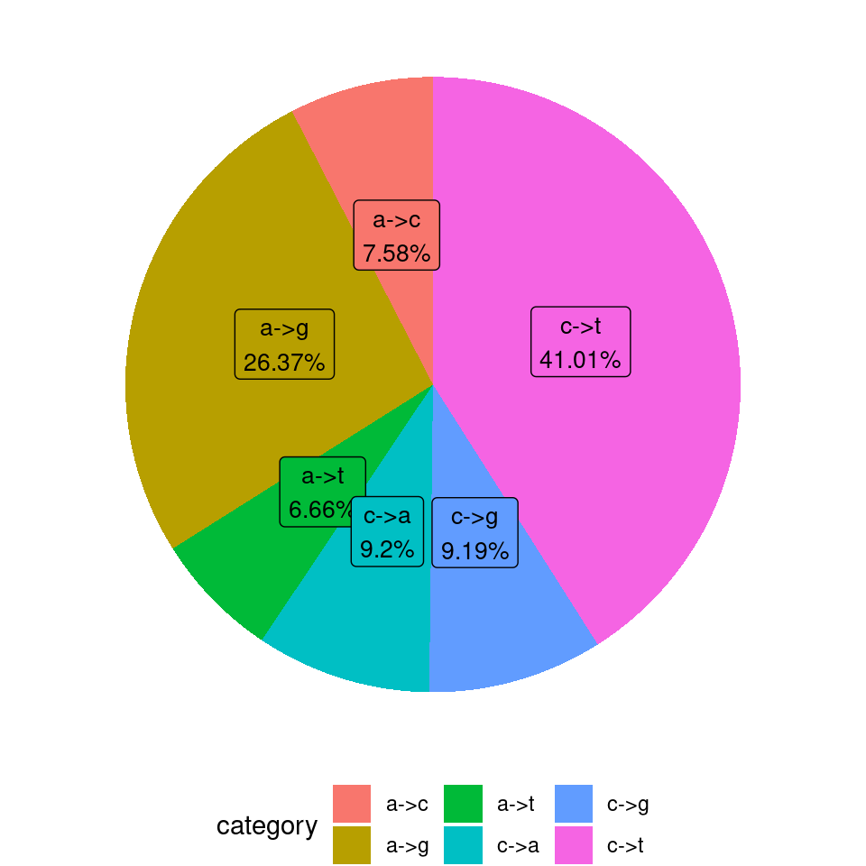
| Version | Author | Date |
|---|---|---|
| 9549cec | XSun | 2023-07-14 |
[1] "all 6 mutation types" chr pos ref alt
1: 1 935823 C T
2: 1 943293 A T
3: 1 943293 A T
4: 1 943379 T G
5: 1 943379 T G
6: 1 943457 G T
7: 1 943457 G T
8: 1 944727 C A
9: 1 944978 A C
10: 1 944978 A C| mutation types | # of mutations |
|---|---|
| a->c t->g | 6613 + 6662 = 13275 |
| a->g t->c | 17381 + 17332 = 34713 |
| a->t t->a | 4354 + 4537 = 8891 |
| c->a g->t | 6634 + 6474 = 13108 |
| c->g g->c | 6681 + 6944 = 13625 |
| c->t g->a | 30553 + 31072 = 61625 |
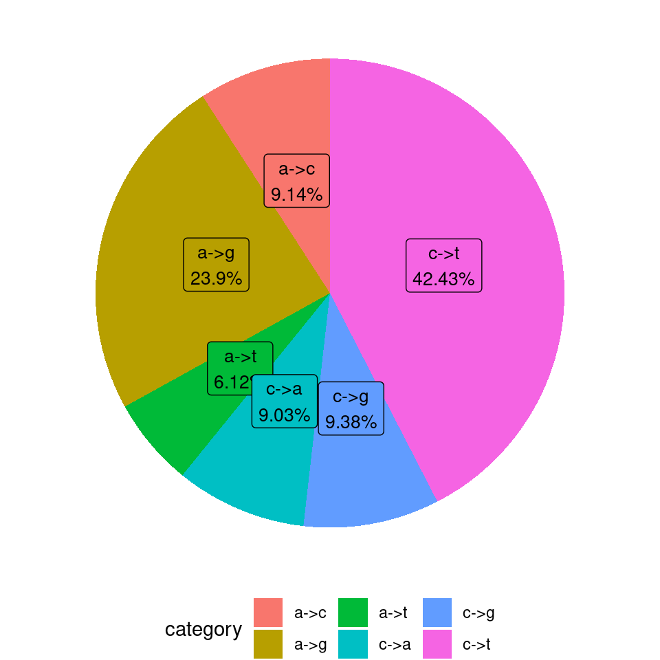
| Version | Author | Date |
|---|---|---|
| 9549cec | XSun | 2023-07-14 |
[1] "fitting: observed (MSSNG) ~ expected (Roulette) + 0"
Call:
lm(formula = denovo_per_chr ~ rl_per_chr + 0)
Residuals:
Min 1Q Median 3Q Max
-1487.2 -281.8 185.9 429.9 830.4
Coefficients:
Estimate Std. Error t value Pr(>|t|)
rl_per_chr 1.735e-04 4.090e-06 42.43 <2e-16 ***
---
Signif. codes: 0 '***' 0.001 '**' 0.01 '*' 0.05 '.' 0.1 ' ' 1
Residual standard error: 586.7 on 21 degrees of freedom
Multiple R-squared: 0.9885, Adjusted R-squared: 0.9879
F-statistic: 1800 on 1 and 21 DF, p-value: < 2.2e-16 expected observed
1 50253606 9467
2 53474100 9087
3 43464927 8066
4 41663740 5742
5 39421238 6094
6 37141088 5970
7 35695695 6610
8 33750908 5460
9 27650683 4714
10 30014563 5721
11 29987360 5573
12 29236186 5449
13 21163806 2904
14 19776337 3323
15 18607378 3663
16 20772392 3976
17 18791954 4091
18 16688515 2650
19 14264451 3282
20 14017970 2608
21 8298094 1146
22 9134347 1781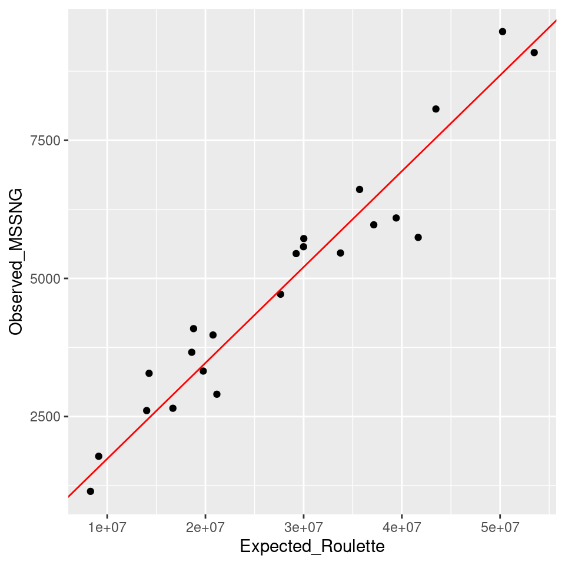
[1] "the scalling factor is 0.00017"[1] "obs = 0.00017* exp"All 6 mutation types, random effect: obs/exp
[1] "the number of observed de novo mutations per window"
0 1 2 3 4 5 6 7 8 9 10 15 19
16639 3893 1525 480 132 41 15 7 4 3 1 1 1
20 30 39
2 1 1 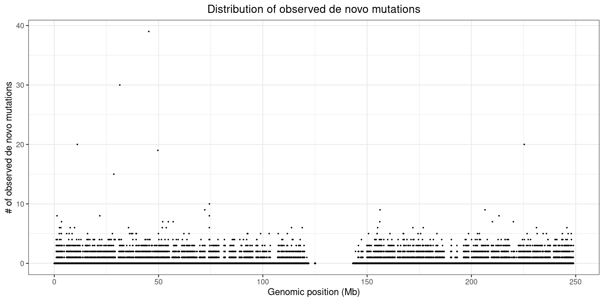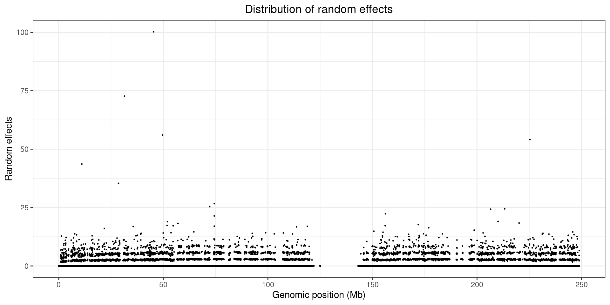
All 6 mutation types, random effect: obs/exp
[1] "the number of observed de novo mutations per window"
0 1 2 3 4 5 6 7 8 9 12
2658 620 279 110 32 12 7 2 1 1 1 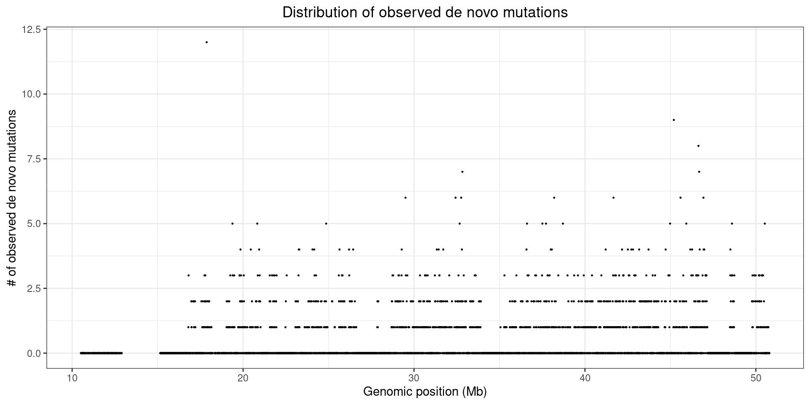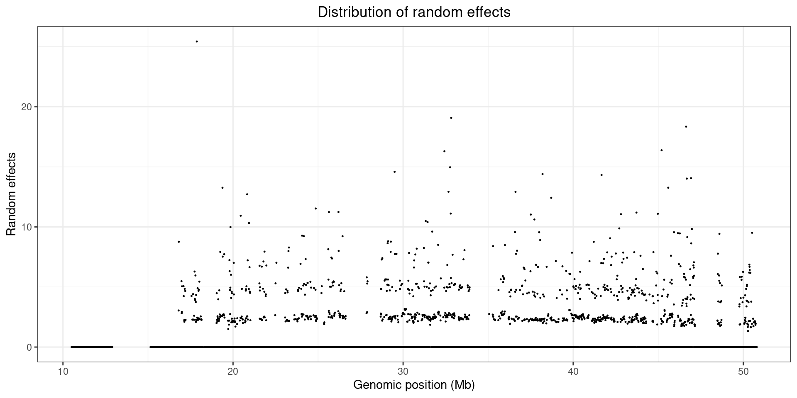
All 6 mutation types, random effect: obs/exp
[1] "the number of observed de novo mutations per window"
0 1 2 3 4 5 6 7 8 9 10 11 12 13 14 16
2040 431 467 441 388 298 203 115 87 41 23 5 5 5 3 3
21 24 25 32 44
1 1 1 1 1 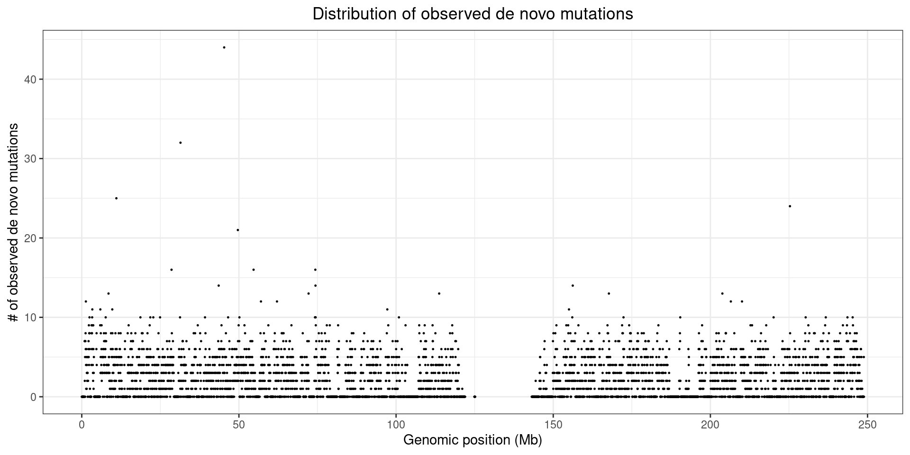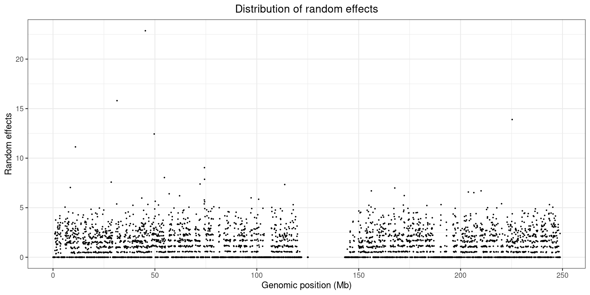
All 6 mutation types, random effect: obs/exp
[1] "the number of observed de novo mutations per window"
0 1 2 3 4 5 6 7 8 9 10 11 12 13 15
333 56 75 60 68 49 51 27 18 7 4 4 1 5 1 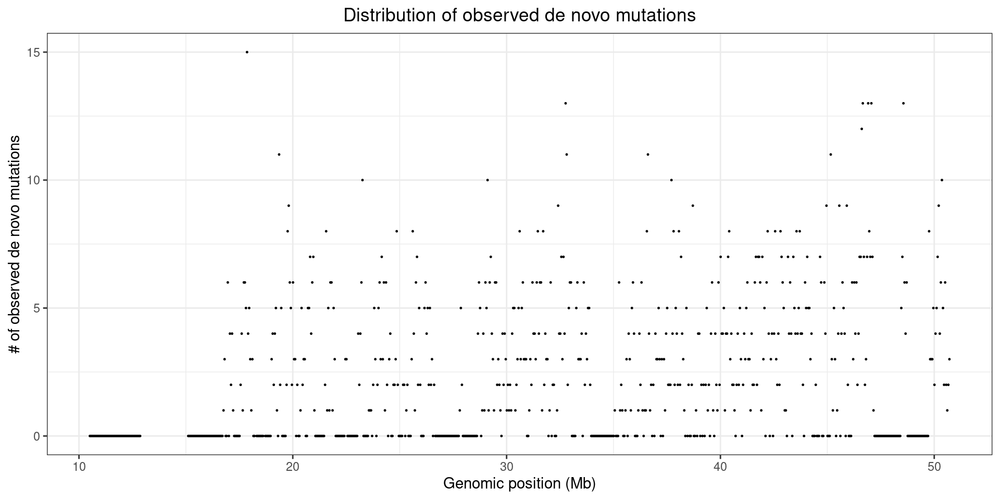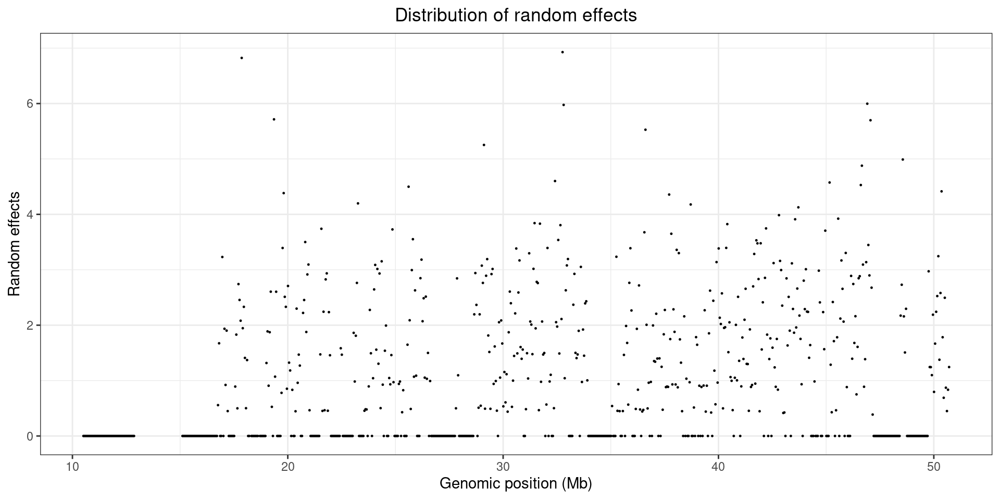
sessionInfo()R version 4.2.0 (2022-04-22)
Platform: x86_64-pc-linux-gnu (64-bit)
Running under: CentOS Linux 7 (Core)
Matrix products: default
BLAS/LAPACK: /software/openblas-0.3.13-el7-x86_64/lib/libopenblas_haswellp-r0.3.13.so
locale:
[1] C
attached base packages:
[1] stats graphics grDevices utils datasets methods base
other attached packages:
[1] ggplot2_3.3.5 data.table_1.14.2
loaded via a namespace (and not attached):
[1] Rcpp_1.0.8.3 highr_0.9 pillar_1.7.0 compiler_4.2.0
[5] bslib_0.3.1 later_1.3.0 jquerylib_0.1.4 git2r_0.30.1
[9] workflowr_1.7.0 tools_4.2.0 digest_0.6.29 gtable_0.3.0
[13] jsonlite_1.8.0 evaluate_0.15 lifecycle_1.0.1 tibble_3.1.7
[17] pkgconfig_2.0.3 rlang_1.0.5 DBI_1.1.2 cli_3.3.0
[21] rstudioapi_0.13 yaml_2.3.5 xfun_0.30 fastmap_1.1.0
[25] withr_2.5.0 dplyr_1.0.9 stringr_1.4.0 knitr_1.39
[29] generics_0.1.2 fs_1.5.2 vctrs_0.4.1 sass_0.4.1
[33] tidyselect_1.1.2 grid_4.2.0 rprojroot_2.0.3 glue_1.6.2
[37] R6_2.5.1 fansi_1.0.3 rmarkdown_2.14 farver_2.1.0
[41] purrr_0.3.4 magrittr_2.0.3 whisker_0.4 scales_1.2.0
[45] promises_1.2.0.1 ellipsis_0.3.2 htmltools_0.5.2 assertthat_0.2.1
[49] colorspace_2.0-3 httpuv_1.6.5 labeling_0.4.2 utf8_1.2.2
[53] stringi_1.7.6 munsell_0.5.0 crayon_1.5.1